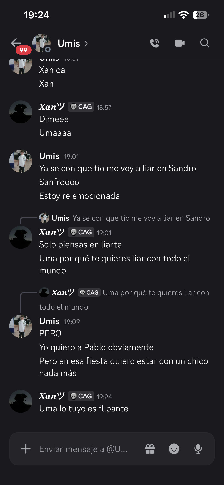

📹 Video Exclusivo
El Video Épico
Cuando el media tomó forma de video. Un momento que la comunidad no olvidará jamás.
El mejor media de Toca Hierbas. Capturas que no se olvidan.
Aquí se guardan los momentos más épicos, divertidos y...
cuestionables de la comunidad.
Este es solo el comienzo. Más capturas por llegar 🔥
Cuando el media tomó forma de video. Un momento que la comunidad no olvidará jamás.

El momento en que todo se volvió caos. Si sabes, sabes. Si no sabes... preguntar es arriesgarse a respuestas que no olvidarás.
Estamos recopilando los mejores momentos. Vuelve pronto para más media fresco.